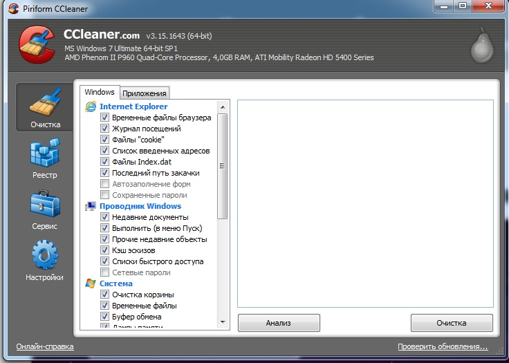
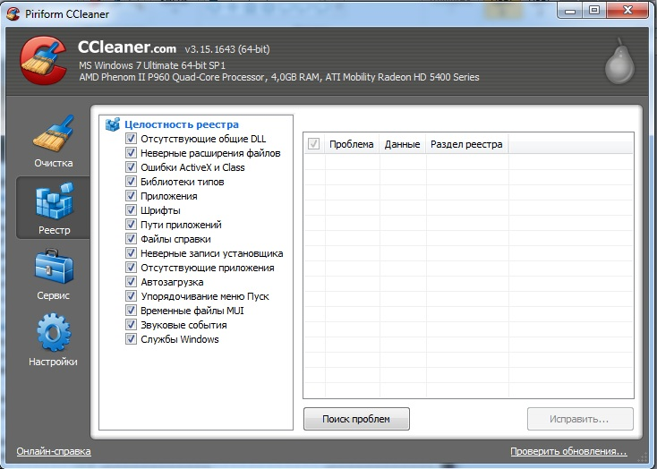
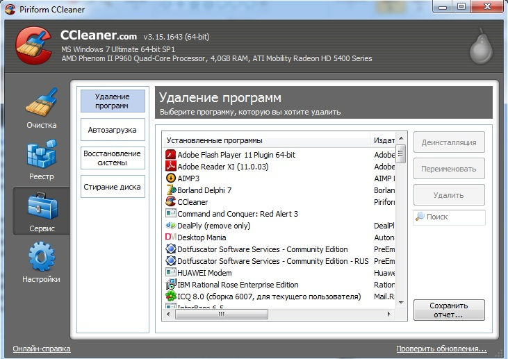

Простой интерфейс и широкий спектр функций позволяют программе CCleaner пользоваться успехом
у большинства пользователей. В вкладке "очистка" список каталогов, в которых по желанию
пользователя можно удалить ненужные файлы
Так же приложение выдает по умолчанию характеристики сканируемой системы и оборудования
Вкладка "реестр" позволяет выборочно просканировать систему на предмет проблем в реестре
В вкладке "сервис" возможно полное удаление программ с компьютера, настройка списка
программ автозагрузки, управление точками восстановления системы, и полное удаление данных с диска
Контрольную работу выполнил студент группы 230105 МИППС 4 курса
Романчик Сергей Сергеевич
E-mail: romanchik-sergey@mail.ru